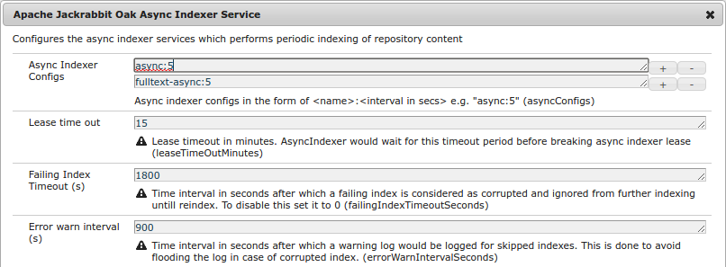
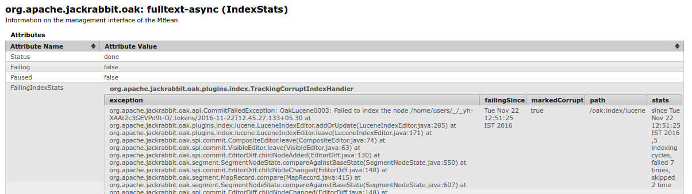
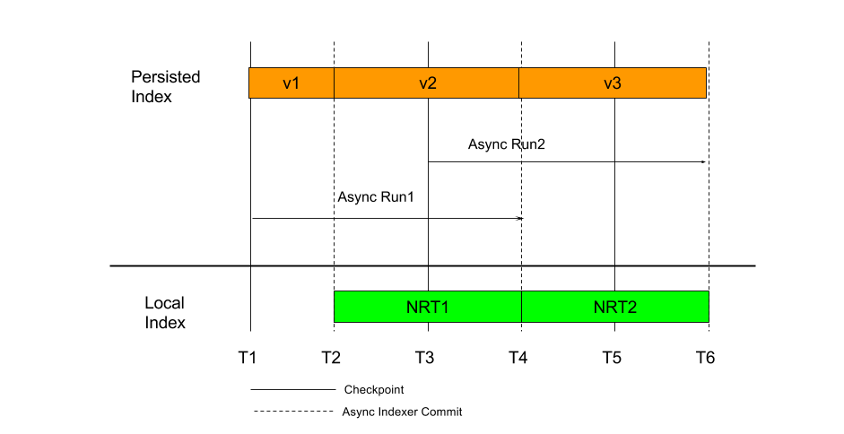

For queries to perform well, Oak supports indexing of content that is stored in the repository. Indexing works by comparing different versions of the node data (technically, “diff” between the base NodeState and the modified NodeState). The indexing mode defines how comparing is performed, and when the index content gets updated:
Indexing uses Commit Editors. Some of the editors are of type IndexEditor, which are responsible for updating index content based on changes in main content. Currently, Oak has following in built editors:
The IndexEditor is invoked as part of a commit (Session.save()), or as part of the asynchronous “diff” process. For both cases, at some stage “diff” is performed between the before and the after state, and passed to IndexUpdate, which is responsible for invoking the IndexEditor based on the discovered index definitions.
Index definitions are nodes of type oak:QueryIndexDefinition, which are stored under a special node named oak:index. As part of diff traversal, at each level, IndexUpdate looks for oak:index nodes. Below is the canonical index definition structure:
/oak:index/indexName - jcr:primaryType = "oak:QueryIndexDefinition" - type (string) mandatory - async (string) multiple - reindex (boolean)
The index definitions nodes have the following properties:
Based on the above two properties, the IndexUpdate creates an IndexEditor instances as it traverses the “diff”, and registers them with itself, passing on the callbacks for changes.
Indexing logic supports placing oak:index nodes at any path. Depending on the location, such indexes only index content which are present under those paths. So, for example if ‘oak:index’ is present at ‘/content/oak:index’, then indexes defined under that node only index repository data present under ‘/content’.
Depending on the type of the index, one can create these index definitions under the root path (‘/’), or non-root paths. Currently only lucene indexes support creating index definitions at non-root paths. property indexes can only be created under the root path, that is, under ‘/’.
Under synchronous indexing, the index content gets updates as part of the commit itself. Changes to both the main content, as well as the index content, are done atomically in a single commit.
This mode is currently supported by property and reference indexes.
Asynchronous indexing (also called async indexing) is performed using periodic scheduled jobs. As part of the setup, Oak schedules certain periodic jobs which perform diff of the repository content, and update the index content based on that.
Each periodic AsyncIndexUpdate job is assigned to an indexing lane, and is scheduled to run at a certain interval. At time of execution, the job performs its work:
Such async indexes are eventually consistent with the repository state, and lag behind the latest repository state by some time. However, the index content is eventually consistent, and never ends up in wrong state with respect to repository state.
A checkpoint is a mechanism, whereby a client of the NodeStore can request Oak to ensure that the repository state (snapshot) at that time can be preserved, and not removed by the revision garbage collection process. Later, that state can be retrieved from the NodeStore by passing the checkpoint. You can think of a checkpoint as a tag in a git repository, or as a named revision.
Async indexing makes use of checkpoint support to access older repository state.
The term “indexing lane” refers to a set of indexes which are to be updated by a given async indexer. Each index definition meant for async indexing defines an async property, whose value is the name of the indexing lane. For example, consider following two index definitions:
/oak:index/userIndex - jcr:primaryType = "oak:QueryIndexDefinition" - async = "async" /oak:index/assetIndex - jcr:primaryType = "oak:QueryIndexDefinition" - async = "fulltext-async"
Here, userIndex is bound to the “async” indexing lane, while assetIndex is bound to the “fulltext-async” lane. Oak setup configures two AsyncIndexUpdate jobs: one for “async”, and one for “fulltext-async”. When the job for “async” is run, it only processes index definition where the async value is async, while when the job for “fulltext-async” is run, it only pick up index definitions where the async value is fulltext-async.
These jobs can be scheduled to run at different intervals, and also on different cluster nodes. Each job keeps its own bookkeeping of checkpoint state, and can be paused and resumed separately.
Prior to Oak 1.4, there was only one indexing lane: async. In Oak 1.4, support was added to create two lanes: async and fulltext-async. With 1.6, it is possible to create multiple lanes.
In a clustered setup, one needs to ensure in the host application that the async indexing jobs for all lanes are run as singleton in the cluster. If AsyncIndexUpdate for the same lane is executed concurrently on different cluster nodes, it leads to race conditions, where an old checkpoint gets lost, leading to reindexing.
See also clustering for more details on how the host application should schedule such indexing jobs.
AsyncIndexUpdate has an in-built “lease” logic to ensure that even if the jobs gets scheduled to run on different cluster nodes, only one of them runs. This is done by keeping a lease property, which gets periodically updated as indexing progresses.
An AsyncIndexUpdate run skips indexing if the current lease has not expired. If the last update of the lease was done too long ago (default: more than 15 minutes), it is assumed that cluster node that is supposed to index is not available, and some other node will take over.
The lease logic can delay the start of indexing if the system is not stopped cleanly. As of Oak 1.6, this does not affect non-clustered setups like those based on SegmentNodeStore, but only affects DocumentNodeStore based setups.
Async indexing jobs are by default configured to run at an interval of 5 seconds. Depending on the system load and diff size of content to be indexed, the indexing may start lagging by a longer time interval. Due to this, the indexing results can lag behind the repository state, and may become stale, that means new content added will only show up in query results after a longer time.
The IndexStats MBean keeps a time series and metrics stats for the indexing frequency. This can be used to track the indexing state.
NRT Indexing introduced in Oak 1.6 helps in such situations, and can keep the results more up to date.
@since Oak 1.6
Async indexers can be configure via the OSGi config for org.apache.jackrabbit.oak.plugins.index.AsyncIndexerService.

Different lanes can be configured by adding more rows of Async Indexer Configs. Prior to 1.6, the indexers were created programatically while constructing Oak.
For each configured async indexer in the setup, the indexer exposes a IndexStatsMBean, which provides various stats around the current indexing state:
org.apache.jackrabbit.oak: async (IndexStats) org.apache.jackrabbit.oak: fulltext-async (IndexStats)
It provide the following details:
Further it provides the following operations:
Since 1.6
The AsyncIndexerService marks any index which fails to update for 30 minutes (configurable) as corrupt, and ignore such indexes from further indexing.
When any index is marked as corrupt, the following log entry is made:
2016-11-22 12:52:35,484 INFO NA [async-index-update-fulltext-async] o.a.j.o.p.i.AsyncIndexUpdate - Marking [/oak:index/lucene] as corrupt. The index is failing since Tue Nov 22 12:51:25 IST 2016, 1 indexing cycles, failed 7 times, skipped 0 time
Post this, when any new content gets indexed and any such corrupt index is skipped, the following warn entry is made:
2016-11-22 12:52:35,485 WARN NA [async-index-update-fulltext-async] o.a.j.o.p.index.IndexUpdate - Ignoring corrupt index [/oak:index/lucene] which has been marked as corrupt since [2016-11-22T12:51:25.492+05:30]. This index MUST be reindexed for indexing to work properly
This info is also seen in the MBean

Later, once the index is reindexed, the following log entry is made
2016-11-22 12:56:25,486 INFO NA [async-index-update-fulltext-async] o.a.j.o.p.index.IndexUpdate - Removing corrupt flag from index [/oak:index/lucene] which has been marked as corrupt since [corrupt = 2016-11-22T12:51:25.492+05:30]
This feature can be disabled by setting failingIndexTimeoutSeconds to 0 in the AsyncIndexService config. See also OAK-4939 for more details.
@since Oak 1.6
This mode is only supported for lucene indexes
Lucene indexes perform well for evaluating complex queries, and have the benefit of being evaluated locally with copy-on-read support. However, they are async, and depending on system load can lag behind the repository state. For cases where such lag (which can be in the order of minutes) is not acceptable, one must use property indexes. To avoid that, Oak 1.6 has added support for near real time indexing

In this mode, the indexing happen in two modes, and a query will consult multiple indexes. The diagram above shows the indexing flow with time. In the above flow:
As the repository state changes with time, the Async indexer will run and index the changes between the last known checkpoint and current state when that run started. So when async run 1 completed, the persisted index has the repository state indexed up to T3.
Now without NRT index support, if any query is performed between T2 and T4, it can only see index results for the repository state at T1, as that is the state where the persisted indexes have data for. Any change after that cannot be seen until the next async indexing cycle is complete (at T4).
With NRT indexing support, indexing will happen at two places:
Any query making use of such an index will automatically make use of both the persisted and the local indexes. With this, new content added in the repository after the last async index run will also show up quickly.
NRT (Near real time) indexing can be enabled for an index by configuring the async property:
/oak:index/assetIndex - jcr:primaryType = "oak:QueryIndexDefinition" - async = ['fulltext-async', 'nrt']
Here, async has been set to a multi-valued property, with the
In this mode, the local index is updated asynchronously on that cluster nodes post each commit, and the index reader is refreshed each second. So, any change done should show up on that cluster node within 1 to 2 seconds.
/oak:index/userIndex - jcr:primaryType = "oak:QueryIndexDefinition" - async = ['async', 'nrt']
In this mode, the local index is updated synchronously on that cluster nodes post each commit, and the index reader is refreshed immediately. This mode indexes more slowly compared to the “nrt” mode.
/oak:index/userIndex - jcr:primaryType = "oak:QueryIndexDefinition" - async = ['async', 'sync']
For a single node setup (for example with the SegmentNodeStore), this mode effectively makes async lucene index perform same as synchronous property indexes. However, the ‘nrt’ mode performs better, so using that is preferable.
In cluster setup, each cluster node maintains its own local index for changes happening in that cluster node. In addition to that, it also indexes changes from other cluster nodes by relying on Oak observation for external changes. This depends on how frequently external changes are delivered. Due to this, even with NRT indexing changes from other cluster nodes will take some more time to be reflected in query results compared to local changes.
NRT indexing expose a few configuration options as part of the LuceneIndexProviderService:
Reindexing rarely solves problems. Specially, it does not typically make queries return the expected result. For such cases, it is not recommended to reindex, also because reindex can be very slow (sometimes multiple days), and use a lot of temporary disk space. Note that removing checkpoints, and removing the hidden :async node will cause a full reindex, so doing this is not recommended either. If queries don’t return the right data, then possibly the index is not yet up-to-date, or the query is incorrect, or included/excluded path settings are wrong (for Lucene indexes). Instead of reindexing, it is suggested to first check the log file, modify the query so it uses a different index or traversal, and run the query again.
Reindexing of existing indexes is required in the following scenarios:
New indexes are built automatically once the index definition is stored. To reindex an existing index (when needed), set the reindex property to true in the respective index definition:
/oak:index/userIndex - reindex = true
Once changes are saved, the index is reindexed. For asynchronous indexes, reindex starts with the next async indexing cycle. For synchronous indexes, the reindexing is done as part of save (or commit) itself. For a (synchronous) property index, as an alternative you can use the PropertyIndexAsyncReindexMBean; see the reindeinxing property indexes section for more details on that.
Once reindexing starts, the following log entries can be seen in the log:
[async-index-update-async] o.a.j.o.p.i.IndexUpdate Reindexing will be performed for following indexes: [/oak:index/userIndex] [async-index-update-async] o.a.j.o.p.i.IndexUpdate Reindexing Traversed #100000 /home/user/admin [async-index-update-async] o.a.j.o.p.i.AsyncIndexUpdate [async] Reindexing completed for indexes: [/oak:index/userIndex*(4407016)] in 30 min
Once reindexing is complete, the reindex flag is set to false automatically.
If the index being reindexed has full text extraction configured then reindexing can take long time as most of the time is spent in text extraction. For such cases its recommended to use text pre-extraction support. The text pre-extraction can be done before starting the actual reindexing. This would then ensure that during reindexing time is not spent in performing text extraction and hence the actual time taken for reindexing such an index gets reduced considerably.
Building an index can be slow. It can be aborted (stopped before it is finished), for example if you detect there is an error in the index definition. Reindexing and building a new index can be aborted when using asynchronous indexes. For synchronous indexes, it can be stopped if it was started using the PropertyIndexAsyncReindexMBean. To do this, use the respective IndexStats JMX bean (for example, async, fulltext-async, or async-reindex), and call the operation abortAndPause(). Then, either set the reindex flag to false (for an existing index), remove the index definition (for a new index), or change the index type to disabled. Store the change. Finally, call the operation resume() so that regular indexing operations can continue.